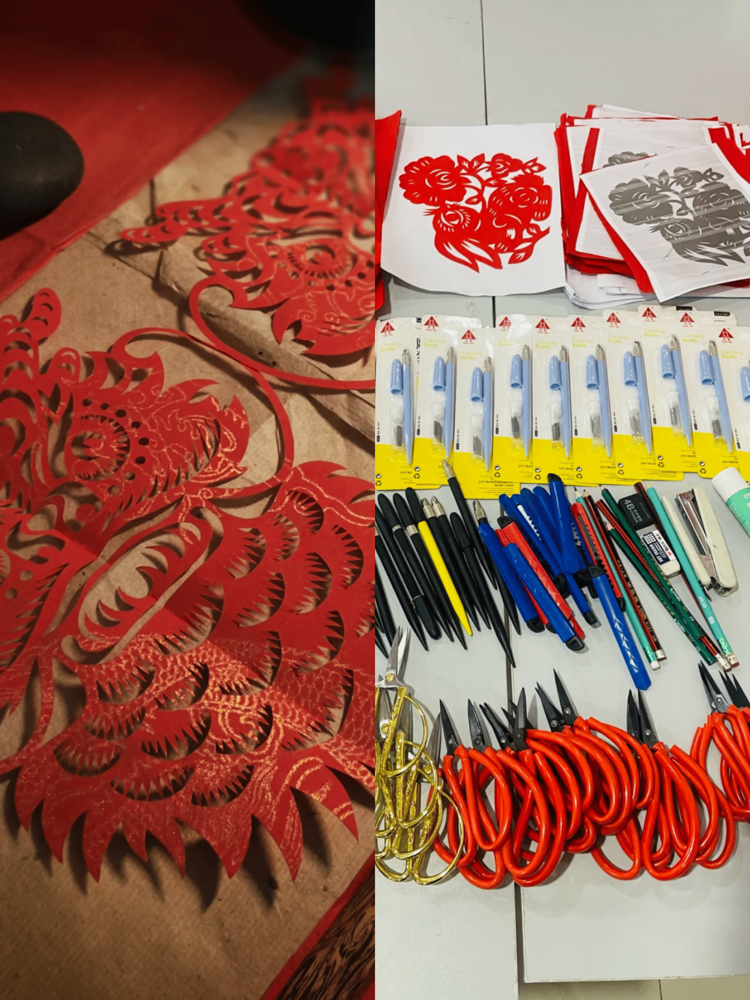

纸间艺韵，手作风华
|  |
DIY剪纸剪纸，是指尖在时光里摩挲出的艺术，承载千年华夏情韵。想不想亲手裁剪出这份镂空的浪漫？我们的剪纸材料包，就是你踏入剪纸艺术殿堂的钥匙。 打开材料包，特制的大红宣纸柔软而有韧性，不易破损、晕染，完美契合剪纸需求；锋利精巧的安全剪刀，贴合手部曲线，开合间裁剪利落；更有详细教程，从基础纹样到复杂构图，一步步为你拆解难点，零基础也能迅速上手。闲暇午后，依着教程剪出福字，祈愿生活美满；或是随心创作，让脑海中的奇思妙想在纸屑纷飞里具象化，为家居添一抹灵动红妆。亲子相伴剪纸，孩子的欢笑声与专注模样，定格温馨瞬间；朋友相聚创作，互相切磋技艺，情谊随纸屑一同落下，越积越深。 一剪一刻间，传统艺术在手中焕发生机，收获满满的成就感。别错过这小小的材料包，它藏着无尽的创意与欢乐，邀你执起剪刀，于纸间雕琢独属于自己的锦绣乾坤。 |